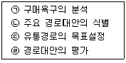
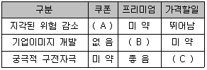
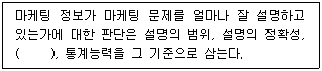
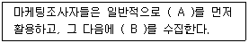
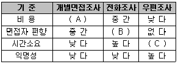
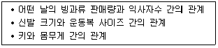
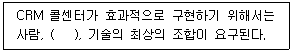

텔레마케팅관리사 (2012-05-20 기출문제)
1과목: 판매관리
1. 시장세분화를 위한 소비자 개인적 특성 변수로 옳지 않은 것은?
- 거주지
- 성 별
- 교육 수준
- 브랜드 애호도
(정답률: 58%)

2. 소비재 유형 중 선매품의 일반적인 소비자 구매행동으로 가장 거리가 먼 것은?
- 계획구매를 한다.
- 쇼핑 노력을 적게 한다.
- 거의 빈번하게 구매를 하지 않는다.
- 가격, 품질, 스타일에 따라 상표를 비교한다.
(정답률: 84%)
3. 다음 중 유통경로 설계과정을 바르게 나열한 것은?

- (ㄷ) → (ㄴ) → (ㄱ) → (ㄹ)
- (ㄴ) → (ㄱ) → (ㄹ) → (ㄷ)
- (ㄱ) → (ㄷ) → (ㄴ) → (ㄹ)
- (ㄹ) → (ㄷ) → (ㄱ) → (ㄴ)
(정답률: 91%)
4. 다음 중 아웃바운드 텔레마케팅 판매전략에 해당하지 않는 것은?
- 고객의 데이터베이스가 필요하다.
- 고객 맞춤의 구매제안이 중요하다.
- 다른 마케팅 매체와의 효과적인 믹스가 필요하다.
- 시간대별 통화량에 따른 인력배치가 중요하다.
(정답률: 79%)
5. 신규고객유지율, 기존고객보유율, 고객반복이용률 등의 효과를 측정하는 데 사용되는 척도는?
- 고객신뢰도
- 고객반응률
- 고객기여도
- 고객성장률
(정답률: 61%)
6. 생산자와 재판매업자가 보다 신중하게 표적화된 촉진을 하는 소비재의 유형에 해당하는 것은?
- 편의품
- 선매품
- 전문품
- 비탐색품
(정답률: 54%)
7. 다음 중 잠재고객의 대상으로 거리가 먼 것은?
- 현재는 다른 경쟁업체를 이용하고 있으나 해당 기업의 제품이나 서비스에 대해 알고 있어 향후 자사 고객으로 확보할 수 있다고 판단되는 고객
- 특정 제품이나 서비스에 대해 문의를 하는 고객 또는 이 같은 고객이 자신의 신분이나 연락처를 밝히는 경우
- 웹상에서 비록 회원가입은 하지 않았으나 자주 클릭하여 접촉을 하거나 하였다고 예측, 판단되는 고객
- 회사에 리스크를 초래하였거나 신용상태, 가입자격 등이 미달되는 고객
(정답률: 94%)
8. 기업의 마케팅 활동에 고객 데이터베이스가 필요한 이유가 아닌 것은?
- 고객의 요구에 부합하는 제품 및 서비스를 창조한다.
- 고객을 몇 개의 그룹으로 나누어 집단화된 구매제안만을 할 수 있다.
- 반응을 측정하고 결과를 예측할 수 있게 한다.
- 고객에게 다가갈 수 있는 독창적인 구매제안을 하게 한다.
(정답률: 87%)
9. 시장세분화시 심리분석적 변수에 해당하지 않는 것은?
- 사회계층
- 라이프스타일
- 개 성
- 연 령
(정답률: 72%)
10. 인바운드 텔레마케팅의 중요성에 대한 설명으로 거리가 먼 것은?
- 거래 마케팅에서 관계 마케팅으로의 변화에 대응
- 기업 서비스 향상으로 고객요구에 대한 신속한 대응
- 광고, 경험, 구전 등에 의한 고객 기대가치의 대응
- 서비스 및 상품 이용고객의 만족 여부 확인
(정답률: 49%)
11. 제품의 가격결정에 영향을 미치는 요인들을 통해 분류된 가격결정방법이 아닌 것은?
- 비용지향적 가격결정방법
- 경쟁지향적 가격결정방법
- 수요지향적 가격결정방법
- 유통지향적 가격결정방법
(정답률: 40%)
12. 마케팅 전략의 수립에 있어서의 당사자 3C에 해당하지 않는 것은?
- Customer
- Contents
- Company
- Competito
(정답률: 61%)
13. 다음은 마케팅 커뮤니케이션 목표와 판매촉진방안 활용에 관한 장·단점을 요약한 표이다. ( ) 안에 알맞은 것은?

- A - 뛰어남, B - 좋음, C - 미약
- A - 없음, B - 뛰어남, C - 뛰어남
- A - 미약, B - 미약, C - 뛰어남
- A - 미약, B - 좋음, C - 뛰어남
(정답률: 31%)
14. 고객에 대한 구매제안 유형 중 고객의 구매이력 등의 관리를 통해 기존에 구매한 고객에게 다른 상품을 구입하도록 하는 제안은?
- Cross Selling
- Up Selling
- Negative Option
- Positive Option
(정답률: 100%)
15. 마케팅믹스의 정의를 가장 올바르게 나타낸 것은?
- 표적시장에서 마케팅목표를 달성하기 위하여 기업이 활용하는 마케팅 도구의 집합이다.
- 통제 불가능한 마케팅 환경을 분석하는 것이다.
- 인사, 재무, 생산, 조직을 통합하는 것이다.
- 비영리마케팅을 추구하는 것이다.
(정답률: 83%)
16. 판매촉진이 다른 커뮤니케이션 수단에 비해 더 많은 비중을 차지하는 이유로 옳지 않은것은?
- 광고와 달리 판매촉진은 매출에 즉각적인 영향을 미치기 때문이다.
- 판매촉진은 구매 관련 위험을 줄이는 가장 효율적인 수단이기 때문이다.
- 상표의 종류가 많아지고 기업들 간의 등가성이 증가하고 있기 때문이다.
- 많은 광고에 노출된 소비자들은 각각의 광고를 기억하기가 어렵기 때문이다.
(정답률: 69%)
17. 다양한 상품의 포트폴리오를 가지고 고객에게 다양한 상품·서비스를 제공하는 회사의 경우, 전반적인 판매를 증가시키기 위해 매우 유용하게 사용되는 마케팅 방법은?
- 상향판매
- 교차판매
- 번들링
- 버저닝
(정답률: 83%)
18. 소비자가 제품 또는 서비스의 공급자를 변경할 때 발생하는 전환비용에 관한 설명으로틀린 것은?
- 탐색비용 - 병원의 초진료와 같이 서비스 개시를 위해 들여야 하는 비용
- 학습비용 - 새로운 시스템에 적응하는 데 드는 비용
- 감정비용 - 공급자와의 장기적 관계가 끊어질 때 경험하는 감정적인 혼란
- 인지적 비용 - 공급자를 바꿀 것인지의 여부를 생각하는 것과 관련된 비용
(정답률: 40%)
19. 고객중심의 패러다임 전환으로 기업들이 집중적인 투자를 확대하고 있는 고객에 대한 서비스와 관계가 없는 것은?
- 고객안내센터(HELP DESK)의 운영
- 대규모 영역, 제품이윤에 대한 서비스
- 수신자부담 서비스(080)의 제공
- 자동음성안내시스템(ARS)의 운영
(정답률: 70%)
20. 고객로열티 형성에 영향을 미치는 요소로 거리가 먼 것은?
- 구매횟수
- 구매방법
- 회사기여도
- 이용기간과 이용실적
(정답률: 66%)
21. 마케팅믹스 중 기업이 소비자, 중간 구매자 또는 기타 이해관계가 있는 대중에게 제품 또는 기업에 관해서 정보를 전달하는 기능은?
- 제 품
- 가 격
- 유 통
- 촉 진
(정답률: 57%)
22. 자사의 제품에 관한 홍보를 소비자들의 입을 빌어“입에서 입으로”라는 원리를 이용한 방식으로 짧은 시간 내에 큰 효과를 볼 수 있는 마케팅 활용 방식은?
- 타깃 마케팅
- 인터넷 마케팅
- 바이러스 마케팅
- 니치 마케팅
(정답률: 82%)
23. 제품수준을 핵심제품, 유형제품, 확장제품 등의 3단계로 분류한 사람은?
- 아담 스미스
- 케인즈
- 코틀러
- 마 샬
(정답률: 89%)
24. 다음 중 효과적인 시장세분화의 요건이 아닌 것은?
- 변동가능성
- 측정가능성
- 접근가능성
- 유지가능성
(정답률: 67%)
25. 아웃바운드 텔레마케팅의 정의에 대한 설명으로 옳은 것은?
- 고객이 먼저 주도하는 고객주도형 텔레마케팅을 말한다.
- 고객에게 카탈로그나 다이렉트 메일(DM)을 발송해준 후에 주문을 받는 업무를 말한다.
- 소비자에 대한 제품 및 서비스 실태, 고객응대 태도, 시장조사 등을 파악하는 것을 말한다.
- 준비된 고객 데이터를 통해 전화를 걸어 계획된 메시지를 전달하고 상담하는 업무를 말한다.
(정답률: 89%)
2과목: 시장조사
26. 다음 중 관찰하고자 하는 현상의 원인이라고 가정한 변수는?
- 종속변수
- 외생변수
- 독립변수
- 통제변수
(정답률: 64%)
27. 시장조사 연구에서 설문에 응답한 내용을 분석하기 위해서 코딩을 해야 한다. 하지만 코딩 과정에서 자료입력자가 실수로 잘못된 정보를 입력할 수 있다. 예를 들어, 어떤 질문에 대한 가능한 응답은 1에서 7까지인데 가끔 입력할 때 실수를 범하여 1에서 7까지의 숫자가 아닌 다른 값(예, 9)을 입력할 수 있다. 이러한 오류를 찾아서 원래의 올바른 값으로 고치는 과정에서 사용하는 분석방법이 아닌 것은?
- 해당 질문에 대한 응답의 빈도분석
- 해당 질문에 대한 응답의 회귀분석
- 해당 질문에 대한 응답의 최댓값과 최솟값 분석
- 해당 질문에 대하여 잘못 입력된 응답이 포함된 설문지의 고유번호(ID)를 알아내는 분석
(정답률: 30%)
28. 표본조사와 전수조사에 관한 설명으로 가장 적합한 것은?
- 모집단 내에 대상자의 수가 너무 많을 경우 표본조사를 한다.
- 전수조사가 표본조사보다 항상 오류가 없으나 비용이 많이 들어서 표본조사를 한다.
- 마케팅 부서는 항상 전수조사를 선호한다.
- 표본조사는 조사결과에 심각한 오류가 많아 기피된다.
(정답률: 72%)
29. 시장조사에 관한 설명으로 가장 옳은 것은?
- 시장조사는 매출과 이익을 증가시키도록 도와주는 질적 기법들의 집합이다.
- 시장조사는 제품을 공급하는 공급자의 요구를 정확히 파악하는 것이다.
- 시장조사는 경쟁자들과의 매출 및 시장점유율에 대한 정보를 수집하는 것이다.
- 시장조사는 자료의 수집과 기록을 위한 도구의 집합체이다.
(정답률: 61%)
30. 시장조사에서 설문지 응답자의 권리를 보호하기 위한 준수사항으로 틀린 것은?
- 응답자에게는 조사면접에 꼭 참가해야 할 의무가 없다.
- 조사자는 응답자가 조사면접에 익숙하지 못하기 때문에 면접의도에 맞는 응답을 유도한다.
- 조사자는 응답자에게 질문을 객관화함으로써 응답자의 사생활을 침해하지 말아야 한다.
- 조사자는 응답자와 조사면접을 할 때 면접에 관한 세칙과 지시사항에 따라 수행해야 한다.
(정답률: 64%)
31. 전화조사시 고려하여야 할 사항으로 틀린 것은?
- 조사시간대는 응답자가 불편을 느끼지 않는 평일 오전이나 오후가 적당하다.
- 전화조사에 적당한 시간은 10분 내외로 10개 전후의 문항으로 한다.
- 전화조사시 질문은 질문지와 최대한 유사하게 질문하여 질문지에 나타난 순서대로 질문한다.
- 조사원은 조사대상자의 답변을 그대로 기록하기보다는 적절히 요약, 정리, 의역, 부연 설명을 할 수 있다.
(정답률: 74%)
32. 고객의 특성, 태도 혹은 행동을 실증적으로 규명하는 데 초점을 두고 어떤 결과를 확인하기 위해 특정 가설을 설정·검증하는 데 주로 이용되는 조사는?
- 기능적 조사
- 정량적 조사
- 정성적 조사
- 탐색적 조사
(정답률: 37%)
33. 설문지를 작성할 때 반드시 포함시키지 않아도 되는 것은?
- 응답자에 대한 협조요청
- 식별자료
- 주소 및 전화번호
- 지시사항
(정답률: 62%)
34. 간행된 2차 자료원을 일반 상업용 자료원과 정보 자료원으로 분류할 수 있다. 일반 상업용 자료원이 아닌 것은?
- 명감(Directories)
- 색인(Index)
- 통계자료
- 센서스자료
(정답률: 29%)
35. 다음 ( ) 안에 가장 알맞은 것은?

- 신뢰성
- 전문성
- 표준성
- 예측성
(정답률: 78%)
36. 응답자의 교육수준에 따라 신뢰도의 차이가 가장 커질 수 있는 척도는?
- 거트만척도(Guttman Scale)
- 의미분화척도(Semantic Differential Scale)
- 리커트척도(Likert Scale)
- 서스톤척도(Thurston Scale)
(정답률: 30%)
37. 자료의 신뢰성을 확보하기 위한 방법과 가장 거리가 먼 것은?
- 측정항목을 늘린다.
- 설문지의 모호성을 제거한다.
- 동일한 질문이나 유사한 질문을 2회 이상 한다.
- 면접자의 면접방식과 태도를 피면접자에 따라 다양하게 진행한다.
(정답률: 50%)
38. 다음 중 1차 자료수집방법의 선택기준으로 가장 거리가 먼 것은?
- 다양성
- 신속도와 비용
- 주관성과 타당성
- 객관성과 정확성
(정답률: 67%)
39. 다음 중 탐색조사의 종류가 아닌 것은?
- 문헌조사
- 전문가조사
- FGI조사
- 사례조사
(정답률: 77%)
40. 전화조사에서 조사항목의 우선순위가 가장 낮은 것은?
- 특정 기업에 대한 선호도 여부
- 특정 사실에 대한 판단(찬성/반대)의 여부
- 주로 구매하는 상품에 대한 질문
- 고객의 신변(소득, 주거, 교육 등)에 관한 사항
(정답률: 50%)
41. 비교집단을 설정하기 곤란한 경우 한 집단을 정해서 3회 이상 시간 간격을 두고 조사하는 방법은?
- 횡단조사
- 시계열조사
- 초점집단조사
- 코호트조사
(정답률: 60%)
42. 다음 ( ) 안에 들어갈 가장 알맞은 것은?

- A - 외부 2차 자료, B - 내부 2차 자료
- A - 내부 1차 자료, B - 외부 1차 자료
- A - 1차 자료, B - 2차 자료
- A - 2차 자료, B - 1차 자료
(정답률: 74%)
43. 미래 수요를 추정하는 데 사용되는 가장 좋은 자료는?
- 시장조성방법
- 구매자들의 의도조사
- 전문가 의견
- 요인분석
(정답률: 60%)
44. 시장조사시 직접적으로 관련된 인적요소로 거리가 먼 것은?
- 조사 연구원
- 조사 의뢰인
- 조사자
- 조사 품질관리자
(정답률: 77%)
45. 다음은 주요 자료수집방법의 비교표이다. ( ) 안에 알맞은 것은?

- A - 높다, B - 낮다, C - 낮다
- A - 낮다, B - 높다, C - 낮다
- A - 낮다, B - 낮다, C - 높다
- A - 높다, B - 높다, C - 낮다
(정답률: 59%)
46. 자료의 측정에 있어 타당성을 높일 수 있는 방법으로 가장 적절하지 않은 것은?
- 연구 담당자가 마케팅 전반 영역에 대한 깊은 지식을 습득한다.
- 이미 타당성을 인정받은 측정방법을 이용한다.
- 사전조사를 통하여 상관관계가 낮은 항목들을 제거한 후 관계가 높은 변수들만을 개념측정에 이용한다.
- 측정의 신뢰도를 낮게 하여 자료측정의 타당도를 높인다.
(정답률: 79%)
47. 다음 중 컴퓨터 활용을 통해 조사결과를 자동화할 수 있는 가장 용이한 자료수집방법은?
- 전화조사
- 면접조사
- 우편조사
- 집단조사
(정답률: 65%)
48. 다음에 제시된 세 가지 상관관계의 공통점은 제3의 변인에 의해 두 변인 간에 존재하는 관계가 설명될 수 있다는 것이다. 이러한 관계를 무엇이라고 하나?

- 인과관계(Causal Relationship)
- 허위관계(Spurious Relationship)
- 매개관계(Mediating Relationship)
- 조절관계(Moderating Relationship)
(정답률: 35%)
49. 전화조사에 의한 자료수집 중 전화질문 절차에 있어서 전화라는 통신수단의 특성상 전화 질문 설계로 잘못된 것은?
- 구체적이고 주관적 질문
- 응답자의 이해도 고려
- 가능한 양자택일형 질문구성
- 조사내용의 간단한 설명
(정답률: 78%)
50. 마케팅믹스의 4P 중 제품(Product) 결정과 관련된 시장조사의 역할과 목적으로 틀린 것은?
- 타깃 소비자가 제품으로부터 기대하는 편익이 무엇인지 알 수 있다.
- 소비자의 가격에 대한 민감도를 파악할 수 있다.
- 기존 제품에 새로 추가할 속성이나 변경해야 할 속성을 파악할 수 있다.
- 브랜드명의 결정, 패키지, 로고 대안들에 대한 테스트를 할 수 있다.
(정답률: 6%)
3과목: 텔레마케팅관리
51. 다음 텔레마케터를 모니터링한 결과 적극적인 상담활동에 해당하는 것은?
- 제품에 대한 설명이 부족하다.
- 고객이 반대하면 바로 중단한다.
- 자신감이 부족하다.
- 고객과 계속 접촉을 시도한다.
(정답률: 87%)
52. 다음 중 조직의 리더에 대한 특성과 관련이 없는 것은?
- 장기적 비전 중심
- 현 상태 수용
- 조직 개혁
- 수평적 관점
(정답률: 60%)
53. CRM 성과 평가기준에서 기업이 고객과의 관계네트워크를 형성하고 유지함으로써 발생하는 장기 순재정수익을 측정하기 위해 제시되는 지표는?
- 관계수익률
- 내부수익률
- 만기수익률
- 기대수익률
(정답률: 75%)
54. 텔레마케팅 활용시 모니터링을 실시하여 얻어지는 이점이 바르게 연결되지 않은 것은?
- 고객 - 서비스에 대한 만족 및 불만족 요소를 전달할 수 있다.
- 회사 - 이미지 향상으로 고객확보와 이익이 발생한다.
- 상담원 - 상담자질이 향상된다.
- 모니터링 담당자 - 코칭 기술을 향상시킬 수 있다.
(정답률: 20%)
55. 성과가 낮은 경우 콜센터 관리자들이 점검해야 할 사항이 아닌 것은?
- 응대 준비의 중요성에 대한 직원교육 및 동기부여의 실패 여부 점검
- 신입직원에 대한 슈퍼바이저의 지원 및 코칭이 유용하지 않은지 점검
- 텔레마케터가 근무스케줄을 잘못 알고 있는지 점검
- 직원들이 휴식 및 이석시간을 사용하지 못하도록 조치
(정답률: 70%)
56. ACD(Auto Call Distribute)에 관한 설명으로 옳은 것은?
- 상담원이 다른 상담원에게 통화내용을 전환하는 기능이다.
- 컴퓨터가 자동으로 전화를 걸어주는 기능이다.
- 상담원이 통화를 끝나는 시기를 예측하여 다이얼링한 후 응답고객만을 연결해주는 기능이다.
- 상담원에게 균등하게 콜을 분배하는 기능이다.
(정답률: 67%)
57. 일반적으로 콜센터는 회사 내 타 부서와의 긴밀한 업무협조가 반드시 필요한데, 다음 중 콜센터 업무와 가장 관련이 적은 기업 내 부서는?
- 마케팅 부서
- 콜 품질관리 부서
- 전산 시스템 부서
- 연구 개발 부서
(정답률: 75%)
58. 콜센터 조직의 특성으로 맞는 것은?
- 기업 중심적이다.
- 고객의 가치를 중시한다.
- 1：1 대면 접촉이다.
- 정보와 커뮤니케이션을 매개로 하지 않는다.
(정답률: 72%)
59. 텔레마케팅을 수행하는 조직의 특성으로 옳지 않은 것은?
- 다양한 기술들의 통합을 위한 관리가 효과적으로 이루어지고 있다.
- 가치를 극대화하기 위한 고객의 행동분석이 효과적으로 이루어지고 있다.
- 텔레마케터의 성과측정이 효과적으로 이루어지고 있다.
- 비용절감을 위한 조직의 역할을 가장 중요하게 여긴다.
(정답률: 84%)
60. 다음 중 보다 합리적이고 능률적인 교육훈련의 실시를 위해 포함되어야 할 교육훈련의 내용이 아닌 것은?
- 전문능력의 개발
- 의사결정능력의 향상
- 사회화과정 훈련
- 근무의욕의 유발
(정답률: 57%)
61. 인쇄매체를 통한 마케팅과는 달리 텔레마케팅이 가지고 있는 가장 큰 특성은?
- 예약 가능성
- 양방향성
- 대중성
- 타깃 도달성
(정답률: 88%)
62. 과거에 콜센터가 달성했던 생산성 변화에 대한 정보를 통해 미래에 필요한 인원수를 예측하는 것은?
- 생산성 비율분석
- 시계열분석
- 기업 효과분석
- 추세분석
(정답률: 52%)
63. 성과 달성을 위한 목표관리의 중점사항이 아닌 것은?
- 개인별 수행목표는 수치화로 명확해야 한다.
- 환경이 변하더라도 목표는 일관성이 있어야 한다.
- 조직의 목표와 개인의 목표가 연계성이 있어야 한다.
- 목표 수행시 상담원과 관리자 간의 의사소통이 필요하다.
(정답률: 87%)
64. 개인 성과평가의 신뢰성과 공정성을 확보하기 위한 방법으로 틀린 것은?
- 다면평가를 효율적으로 활용한다.
- 평가자에 대해 평가체계, 평가기법 등의 종합적인 평과관련 교육을 강화한다.
- 평가결과를 공개하여 평가자와 피평가자 간의 면담을 통한 코칭을 비활성화한다.
- 피평가자가 평가결과에 불만이 있는 경우 이의제기를 할 수 있는 소통채널을 운영한다.
(정답률: 75%)
65. 직무분석을 통하여 얻은 직무에 관한 자료와 정보를 직무의 기록한 문서이며, 직무표식, 직무개요, 직무내용, 직무요건 등을 기술한 것은?
- 직무설명서
- 직무능력서
- 직무기술서
- 직무개요서
(정답률: 71%)
66. 인바운드 콜센터의 인입콜 데이터 산정기준에 대한 설명으로 적합하지 않은 것은?
- 퍼펙트 콜 수를 기준으로 산정한다.
- 인입되는 모든 콜은 시간별, 요일별 특성을 감안하여 산정하지 않고 동일한 기준과 방법으로만 산정한다.
- 상담원의 결근, 휴식, 식사, 개인적 부재 등의 부재성을 배제한 상태에서 산정된 데이터를 기준으로 한다.
- 먼저 걸려온 전화가 먼저 처리되는 순서를 준수하여 보다 정밀하고 객관적으로 산정되도록 한다.
(정답률: 56%)
67. 콜센터의 역할 및 기능과 가장 거리가 먼 것은?
- 비용절감
- 수익증대
- 고객정보 분산
- 고객관리
(정답률: 72%)
68. 다음 중 콜센터에 대한 설명으로 틀린 것은?
- 콜센터는 기업과 고객 간에 정보통신수단을 통한 커뮤니케이션적인 접촉이 이루어지는 곳이다.
- 콜센터는 기업의 제품기획과 개발, 광고전략 수립, 행정업무 등이 이루어지는 곳이다.
- 콜센터는 크게 인바운드형 콜처리 업무와 아웃바운드형 콜처리 업무가 이루어진다.
- 텔레마케팅과 커뮤니케이션이 결합되어 전문상담이 이루어지는 고객지향적 조직이라고 볼 수 있다.
(정답률: 84%)
69. 선진국의 통화 품질 평가표를 보면 Yes/No 방식의 채점 방식이 많이 사용된다. 그 이유로 가장 타당한 것은?
- 평가 점수를 전반적으로 올리기 위함이다.
- 평가 점수를 관대하게 주기 위함이다.
- 평가를 용이하게 하기 위함이다.
- 평가의 객관성을 유지하기 위함이다.
(정답률: 62%)
70. 고객을 가장하여 상담원에게 전화를 걸어 평가하는 방법은?
- Mystery Monitoring
- Silent Monitoring
- Self Monitoring
- Stand Monitoring
(정답률: 69%)
71. 아웃바운드형 콜센터의 성과분석 관리지표에 대한 설명으로 틀린 것은?
- 고객DB 소진율 - 총고객 DB 불출 건수 대비 텔레마케팅으로 소진한 DB 건수가 차지하는 비율
- 고객DB 사용 대비 고객획득률 - 총고객 DB 불출 건수 대비 고객으로 획득한 비율
- 1콜당 평균 전화비용 - 아웃바운드 텔레마케팅을 하였을 경우 1콜당 평균적으로 소요되는 전화비용의 정도
- 총 매출액 - 일정기간 동안 아웃바운드 텔레마케팅을 실행한 결과 발생하는 총매출액
(정답률: 30%)
72. 텔레마케터에 대한 OJT 실시 효과를 제고하기 위한 평가에 관한 설명으로 틀린 것은?
- OJT 종료 후에 개인별 및 전체적인 측면을 평가한다.
- 계획, 실시, 결과의 단계별로 평가하면 효율적이다.
- OJT 실시 중 기업의 전략, 업무, 영업방법 등이 변경되었을 때에는 평가기준에 대한 수정 여부를 검토해야 한다.
- OJT 평가결과에 대한 수용도가 낮으므로 평가결과에 대한 피드백은 개인에게 하지 않아야 한다.
(정답률: 83%)
73. 텔레마케팅에 대한 설명으로 옳은 것은?
- 텔레마케팅은 방문 상담을 통한 수익 창출 형태의 마케팅 기법이다.
- 텔레마케팅을 위해서는 필수적으로 전용 교환기 및 CTI 장비를 갖춘 콜센터가 반드시 필요하다.
- 웹 사이트상으로 상품의 판매나 고객 지원이 가능한 경우는 별도로 전화 상담원을 둘 필요가 없다.
- 대중매체의 광고를 통해 소비자에게 주문 전화를 유도하여 상품을 판매하는 것도 텔레마케팅의 기법 중에 하나이다.
(정답률: 67%)
74. 콜센터 문화에 영향을 미치는 사회적 요인에 해당되지 않는 것은?
- 행정당국의 제도적 지원
- 상담원의 근로선택의 자유로움
- 상담원에 대한 직업의 매력도
- 상담원과 슈퍼바이저의 인간적 친밀감
(정답률: 58%)
75. 아웃바운드 텔레마케팅의 성과지표로 적합하지 않은 것은?
- 시간당 판매량
- 평균 판매가치
- 평균 포기콜
- 판매건당 비용
(정답률: 55%)
4과목: 고객응대
76. 조직 측면에서 CRM의 성공요인이라 볼 수 없는 것은?
- 최고경영자 및 CIO(Chief Information Officer)의 지속적인 지원과 관심이 있어야 한다.
- 고객지향적이고 정보지향적인 기업의 성향이 높을수록 CRM의 수용도도 높아진다.
- CRM은 시스템의 복합성 때문에 여러 부서의 참여보다는 마케팅부서의 단독 실행이 더 효과적이다.
- 평가 및 보상은 CRM의 성공적 실행에서 반드시 극복해야 할 장애물임과 동시에 조직변화를 유도하는 필수적인 요소이다.
(정답률: 73%)
77. 텔레커뮤니케이션의 3요소가 아닌 것은?
- 경청능력
- 언어표현
- 음성품질
- 사고능력
(정답률: 60%)
78. 효과적인 고객 상담을 위한 말하기 기술에 관한 설명으로 틀린 것은?
- 너무 장황하게 응답하지 않는다.
- 억양으로 소비자와 공감한다는 태도를 보인다.
- 지역에 따라 사투리, 방언 등을 사용한다.
- 상담의 진행을 위하여 유도성 질문을 이용한다.
(정답률: 78%)
79. CRM에 대한 분류는 메타그룹의 산업보고서에 대한 분류기준을 따른다. CRM은 프로세스 관점에 따라 몇 가지로 구분되는데 그중 영업·마케팅·서비스 측면에서 고객정보를 활용하기 위해 고객자료를 추출하여 고객의 행동을 예측하는 시스템은 무엇인가?
- 분석 CRM
- 운영 CRM
- 협업 CRM
- 통합 CRM
(정답률: 77%)
80. B2B(Business to Business) CRM의 설명으로 틀린 것은?
- 기업 대 기업의 판매는 본질적으로 기업이 아닌 실체적인 개별 인간과의 거래이므로 실체적 인간이 바라는 요구에 대응하는 것이 B2B CRM의 핵심이다.
- B2B 고객과의 관계 관리는 일반 소비자 고객과의 관계와 다를 게 없으므로 개별 고객과의 쌍방향 대화를 통해서 가치 있는 해법을 찾는 것이 과제이다.
- B2B 프로그램의 경우 기업과 소비자 모두를 대상으로 하기 때문에 개별 소비자 프로그램에 비해 범위가 넓다.
- B2B CRM은 B2C(Business to Consumer) CRM에 비해서 고려해야 할 범위가 좁다고 할 수 있다.
(정답률: 57%)
81. 성공적인 CRM 운영을 위하여 필요한 사항이 아닌 것은?
- CRM 관련 기술 및 마케팅 관련 전문 인력을 확보해야 한다.
- 매스미디어를 이용한 마케팅활동이 중요시되어야 한다.
- CRM 중심 부서 간 업무가 통합되어서 고객대응이 원활해야 한다.
- 고객 및 정보 지향적 문화가 기업내부에 확산되어야 한다.
(정답률: 82%)
82. 기업이 정치, 경제, 법률, 사회, 기술적인 요인 등이 고객에게 미칠 영향을 분석하는 것은 새로운 추세를 탐색하는 데 많은 도움을 준다. 다음 중 신제품의 수명주기는 어떤 요인에 해당하는가?
- 정치 법률적 요인
- 경제적 요인
- 사회문화적 요인
- 기술적 요인
(정답률: 44%)
83. 의사소통 방법 중 언어적인 메시지에 해당하지 않는 것은?
- 말
- 편 지
- 메 일
- 음성의 억양
(정답률: 80%)
84. 인바운드 상담절차 중 고객의 욕구를 파악하기 바로 직전 단계에서 이루어져야 하는 것은?
- Q&A 시트 학습 및 인지
- 동의와 확인
- 전화응답과 자신의 소개
- 콜센터 시스템 이상 유무 확인
(정답률: 63%)
85. 효과적인 커뮤니케이션을 위한 사항으로 가장 거리가 먼 것은?
- 말하는 사람의 생각을 방해하지 않는다.
- 말하는 사람 쪽으로 몸을 기울인다.
- 편안하게 눈을 맞춘다.
- 다른 사람이 이해할 수 없는 전문용어를 사용한다.
(정답률: 86%)
86. 합리적인 행동스타일을 가진 고객과 상담할 때 가장 적합한 상담기술은?
- 표현을 간략하게 하므로 정보를 이끌어 내기 위해 개방형 질문을 사용한다.
- 개인정보를 주지 않으려고 하므로 사무적인 대화부터 시작하는 것이 좋다.
- 상담시 말의 속도와 흥분 정도를 고객과 맞추어야 한다.
- 힘 있는 어조를 보이므로 방어적으로 반응하는 것은 좋지 않다.
(정답률: 56%)
87. 구매 전 단계에서 커뮤니케이션의 목표에 해당하지 않는 것은?
- 구매위험의 감소
- 상표인지의 증대
- 기업이미지의 개발
- 반복구매행동의 증대
(정답률: 70%)
88. 다음 중 고객 불만 처리에 대한 설명으로 틀린 것은?
- 고객 불만을 효과적으로 처리하면 고객유지율이 향상된다.
- 고객 불만 처리에 소요된 비용은 장기적으로 기업의 이윤을 감소시킨다.
- 고객 불만 처리 결과는 기업의 경영을 위해 유용한 자료가 된다.
- 효과적인 고객 불만 처리를 통해 기업의 대외 이미지를 향상시킬 수 있다.
(정답률: 89%)
89. CRM을 위한 캠페인 평가지표 중 조직의 캠페인 실행역량을 평가하는 지표로 옳은 것은?
- 캠페인 실행률
- 캠페인 접촉률
- 캠페인 반응률
- 캠페인 성공률
(정답률: 50%)
90. CRM 도입에 필요한 기술로서 고객프로파일, 고객거래 데이터 등의 자료를 이용하여 고객의 성향이나 요구사항 등을 파악하여 고객대응을 효율적으로 하는 기술은?
- CTI 기술
- 데이터베이스 기술
- 고객성향분석 기술
- 지식기반 기술
(정답률: 58%)
91. 다음 중 고객이 기업과 만나는 모든 장면에서의 결정적인 순간을 의미하는 것은?
- MOT
- CSP
- POCS
- ATT
(정답률: 84%)
92. 주문접수 처리업무의 특성에 대한 설명으로 틀린 것은?
- 편리한 주문접수처리 기능은 인바운드 텔레마케팅의 대표적인 업무이다.
- 통화성공률을 높이는 것이 절대적으로 요구된다.
- 대금결제의 안정성 보장을 위해 VAN사업자를 통한 업무 제휴가 필요하다.
- 전산으로 처리되는 업무가 증가하고 있기 때문에 상담원교육의 중요성은 과거보다 감소되고 있다.
(정답률: 78%)
93. 고객의 행동유형에 따른 효과적인 응대요령으로 가장 적합한 것은?
- 추진형 - 요점만을 제시하고 결정은 본인 스스로 내리게 한다.
- 표현형 - 자료를 제시하고 애매한 일반화는 피한다.
- 분석형 - 반박을 하지 않도록 주의하고 편안하게 친근감 있게 대한다.
- 온화형 - 관심을 갖는 시간이 짧기 때문에 흥미를 잃지 않도록 유의해야 한다.
(정답률: 56%)
94. 고객과 친근감을 형성하기 위한 분위기 조성방법과 가장 거리가 먼 것은?
- 고객의 감정을 잘 수용하여 공감을 표하고 우호적인 분위기를 조성한다.
- 본론부터 언급한 후 친근감을 준다.
- 처음 대할 때에는 긴장된 분위기부터 완화시킨다.
- 상호이익이 될 주제를 찾아 대화한다.
(정답률: 84%)
95. 대인커뮤니케이션과 매스커뮤니케이션의 상대적인 비교 설명으로 틀린 것은?
- 대인커뮤니케이션의 전달자는 비전문가인 반면 매스커뮤니케이션은 전문가이다.
- 대인커뮤니케이션의 채널은 면 대 면이고 매스커뮤니케이션은 매스미디어이다.
- 대인커뮤니케이션의 기능은 설득이고 매스커뮤니케이션은 정보제공이다.
- 대인커뮤니케이션의 피드백은 느리고 매스커뮤니케이션은 즉각적이다.
(정답률: 47%)
96. 고객 성격의 특성에 따른 응대법 중 올바르지 않은 것은?
- 급한 성격은 신속하게 행동하고 설명도 핵심만 강조한다.
- 결단성이 없는 성격은 기회를 잡아 빨리 요점만 설명한다.
- 내성적인 성격은 조용하게 응대하고 상대의 의견을 충분히 들어준다.
- 흥분을 잘하는 성격은 부드러운 분위기를 유지하며 강압하지 않는다.
(정답률: 83%)
97. 다음 ( ) 안에 가장 알맞은 용어는?

- 제 도
- 조 직
- 프로세스
- 전 략
(정답률: 48%)
98. 고객속성 데이터에 대한 설명으로 올바른 것은?
- 거래연수 등 거래와 연관된 데이터이다.
- 고객의 구매습성을 나타낸 데이터이다.
- 고객의 이름, 연령 등 생활에 대한 전반적인 상황기록 데이터를 의미한다.
- CRM이라고도 한다.
(정답률: 69%)
99. 기업은 고객의 이탈을 방지하기 위해 금전적 형태의 대책과 심리적 형태의 대책을 사용한다. 다음 중 심리적 형태의 대책에 해당하는 것은?
- 결제대금 지불시기 연장
- 시장가격 보장
- 고객을 위한 디자인 서비스
- 정보제공
(정답률: 38%)
100. 지속적인 상품 구매를 유도하기 위한 고객 응대시 상담원의 올바른 자세가 아닌 것은?
- 설득력 있는 대화와 유용한 정보 제공을 통해 고객의 구매 의사 결정에 도움을 주어야 한다.
- 자신 있는 태도와 말씨, 전문적인 상담을 통해 고객의 신뢰를 획득해야 한다.
- 가능하면 수익을 많이 올려야 하므로 고객들에게 많은 물건을 높은 가격에 판매하도록 노력해야 한다.
- 상품의 판매뿐 아니라 고객의 관리를 위해 고객 정보를 수집하고 고객과의 지속적인 관계 유지를 위한 노력을 기울여야 한다.
(정답률: 86%)